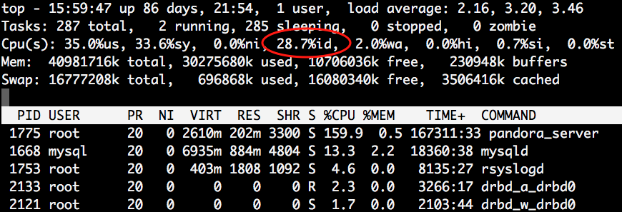
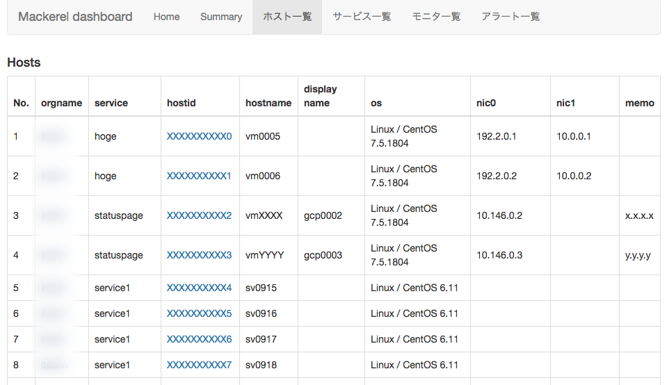
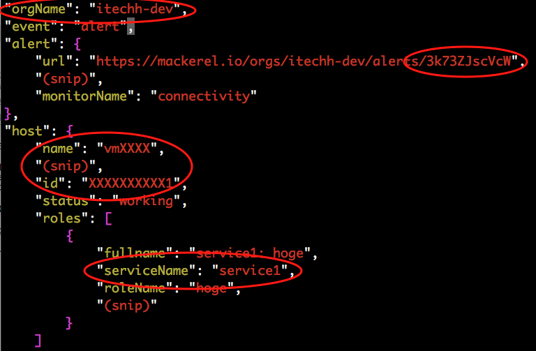
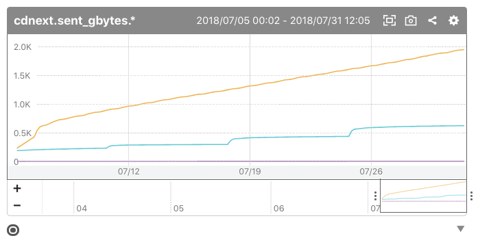
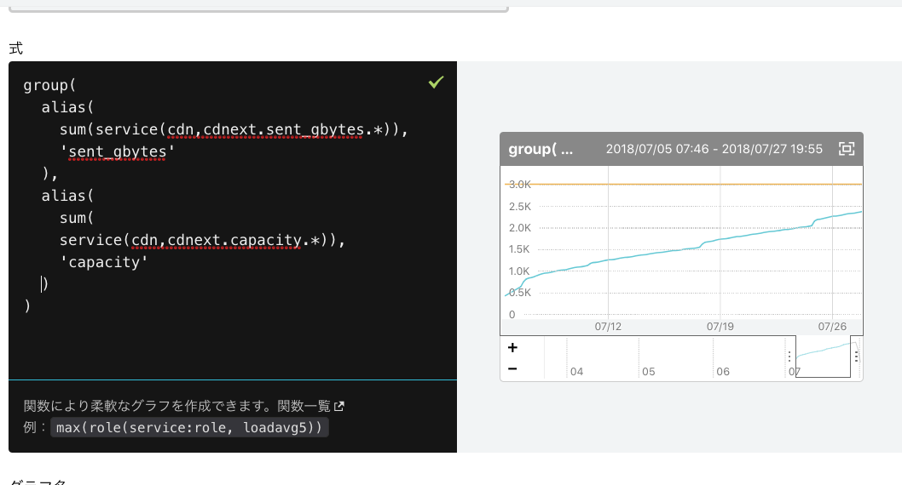

フルマネージドホスティングの
運用監視に Mackerel を導入した話
Kenichi Morimoto
2018 / 08 / 02
Mackerel Meetup #12
もくじ
- 自己紹介
- 既存の監視・運用の問題点
- Mackerel 導入理由
- Mackerel 導入後
- 監視利用例
自己紹介
- 名前: 森本 健一
- 2006~
- GCP Cloud Architect
- AWS Solutions Architect Associate
法人向けフルマネージド ホスティング
- 自社基盤メイン
- 既存 ISP の回線設備を有効活用
- クラウド基盤 VMware / 約700VM
- 物理 専用サーバ、共用サーバ / 約500台
- NW 機器 / 約300台
- パブリッククラウド
抱えていた問題
- ユーザへの障害通知のタイムラグ
- 混在している監視システム
- たびたび起こる監視設定の間違い
- 監視サーバの設計上の問題
ユーザへの障害通知のタイムラグ
- 手動で連絡
- どうしても連絡が遅くなる
- 社内の複数部署と連携しているシステム
混在している監視システム
- Zabbix
- Pandora FMS
- Cacti (２つ)
- GrowthForecast
各担当者が個別に用意して運用が煩雑に
Cacti
- L2/L3 SW の interface 全部 グラフにするとかは楽
- snmp、mib の知識が必要 (やや特殊)
- cacti plugin 作成の学習コスト
- お手軽にグラフ描きたい！
GrowthForecast
- cactiより簡単にグラフ化したいので採用！
- API経由でグラフ作成
- 単体ではアラート通知機能がない
- 通知の必要がない統計グラフに利用している
Pandora FMS
- オープンソースの監視ソフトウェア
- クラウド基盤構築時に導入
- 子会社 (システム運用、監視、障害対応) にコミッタがいたので採用
Pandora FMS 問題点
- リソース結構使う
- 普段は問題ない
- 監視サーバのスペック
- CPU: Intel Xeon E5-2407 2.20GHz 4コア
- Memory: 40GB
Pandora FMS 監視数
- 監視ホスト数: 約600
- 監視項目数: 約3500
リソース状況

$ sar
00:00:00 CPU %user %nice %system %iowait %steal %idle
Average: all 39.53 0.00 25.00 3.27 0.00 32.19
監視サーバの設計の問題
- 当初予算の制約
- 同一H/Wで監視とログサーバを兼ねていた
- Pandora FMS が想定よりリソース食う
- クラウド基盤と同一NW内に監視サーバを配置
ある日 大規模な NW 障害が発生
- NW 環境が不安定に
- 一部のホストとストレージが切断
- 約１時間、影響 数百VM
- Pandora 上はステータスが“不明”となりアラート通知が飛ばなかった
- 後日調査: Pandora のリソース不足が原因だった可能性が高い
たびたび起きる監視設定ミス
サーバ構築者が監視担当者に依頼
- 監視設定間違い (ex: ホスト、ポート)
- アラート送信設定間違い (ex: 送信未設定、宛先)
- サーバ構築者が監視依頼を忘れていた 😇
根本的な原因: レビューがない
当時抱えていた問題 (おさらい)
- 障害通知のタイムラグ
- 混在している監視システム
- たびたび起こる監視設定の間違い
- 監視サーバの設計上の問題
Mackerel 導入理由
- 個々の課題の解決方法は色々あった
- Mackerel を使えば総合的に解決できそう
- SaaS / マネージドサービス
- コスト比較
- クラウドに Zabbix インスタンス 冗長構成
- VPN、監視運用、管理
監視サーバの保守が不要
オンプレ or クラウド上で監視サーバ構築の場合
- クラスタ構成(PaceMaker等)、複数台構成
- Pandora FMS, Zabbix, Zabbix Proxy
- 台数、容量増加時にスケールできる設計が必要
プライベート NW 環境に導入しやすい
- セキュリティ要件の厳しい顧客のプライベートネットワーク環境
- api.mackerelio.com 443 port への outbound の許可があればOK
- HTTP Proxy or NAT
- 監視のために 443 通します、という説明は必要
- 監視サーバからのルーティング、FW許可などが不要
工夫したこと
- 障害情報ページへのリアルタイムの反映
- オーガニゼーションをまたがった検索
- 顧客への通知メールのカスタマイズ
マネージドホスティング
- 原則 1顧客 1オーガニゼーション
- Mackerel 管理画面上でオーガニゼーションを超えてホスト、アラートが検索できない
自前ダッシュボードの作成
- GCP 上に GCE インスタンスを構築
- 本当は App Engineを使ってみたかった 😇
- 本番利用の実績がなく、実装までの時間の都合上断念
- Python + Flask + FlaskAdmin で作成
- API Key の管理
- 登録ホスト、アラート等を JSON で取得
- オーガニゼーションごとのホスト数
Flask Admin + SQLAlchemy
class Organizations(db.Model):
id = db.Column(db.Integer, primary_key=True)
name = db.Column(db.String(50), nullable=False, index=True)
apikey = db.Column(db.String(50), nullable=False, unique=True)
verified = db.Column(db.Boolean)
private = db.Column(db.Boolean)
memo = db.Column(db.String(200))
admin.add_view(ModelView(Organizations, db.session))
JSON を元に出力した html (hosts)

通知メールのカスタマイズ
- Mackerel からの通知メール
- From: noreply@mackerel.io
- 営業の要望
- From の変更
- メール本文のカスタマイズ
- 簡単な内容で送って欲しい
- service ごとに異なる宛先に送りたい
Webhook request body 抜粋

GCP 上に API 用意
- Flask で Webhook 受け取る
- JSON から orgName, hostname 等を取得
- 1ホスト 1サービス で運用
- ユーザへのメール送信には SendGrid を利用
user = db.session.query(Notifications).filter(
Notifications.orgname == orgname,
Notifications.service == service).first()
書き換えたメール
- Mackerel のアラートID をケースID として通知
- 問い合わせの際にMackerel 上で追える
マネージドクラウド 障害を検知いたしました。
発生日時 ： 2018-07-26 11:57:04
障害対象サーバ： vmXXXX
ケースID ： 3k73ZJscVcW
詳細については下記Webサイトをご確認ください。
Mackerel 導入後の構成
- エージェントインストールで死活監視は自動的に開始
- これだけで監視漏れがなくなる安心感が得られる
アラートごとの宛先がわかりやすい

Mackerel 導入前 URL 監視設定フロー
- サーバ構築者が監視内容をexcelに記入
- サーバ構築者がチケットにexcelを添付
- 監視担当者がチケット内容を元に監視設定
辛い 😇
Mackerel 導入後 (予定)
- 担当者が監視内容を設定
- mkr monitors pull して編集
- branch 切って commit, push (社内 Gitlab )
- Merge Request 投げる
- チェック者が Merge
cron を Mackerel に巻き取る
- 定期的なチェック処理等
- クリティカルなモノは結果を監視してる
- 全部してない
- スクリプト個別に実装すると面倒
- 終了ステータスだけ調整すれば check plugin で出来る
CDN
- CDN: J-Stream とパートナー契約
- (利用状況次第で) AWSより転送単価安い
- CloudWatch のような通知機能がない
- APIで転送量取得は可能
- 転送量コミット xx TB / 月額 oo 万円
- 容量超過時 xx 円 / GB
CDNの転送量監視
- Mackerel でメトリック監視で解決
- サービスメトリックに投稿
- 容量超過が発生したらアラート通知
- グラフ共有で関係者に転送量状況を共有
7月の某ユーザのtraffic graph

グラフ式 - 全ユーザの CDN 合計容量

Mackerel 登録ホスト数の監視
- default では mackerel-agent.conf は一般ユーザで読み取り可能
- API Key がわかる
- chmod 600 mackerel-agent.conf し忘れたり
- 他部署に root 権限を渡している
- 自前ダッシュボードのAPIが正常動作しているかの確認も兼ねてる
ホストのメモ情報
- マニュアルへの link とか書きたい
- メールには含まれていない
- Webhookで飛んでくる JSON には含まれている
外形監視
- Mackerel で外部からの監視
- URL 外形監視はある
- 特定ホストの障害として紐づけたい
- icmp, port 監視
- Mackerel 本体で全部やってくれたら嬉しい
- もしくは OSS を使う
まとめ
- エージェントインストールだけで監視が始まる安心感
- API が豊富に提供されていて大抵のことはできる
- 運用監視を Mackerel に任せることでサービス提供に集中できる